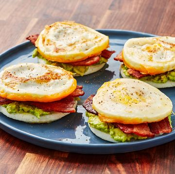
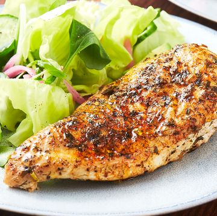
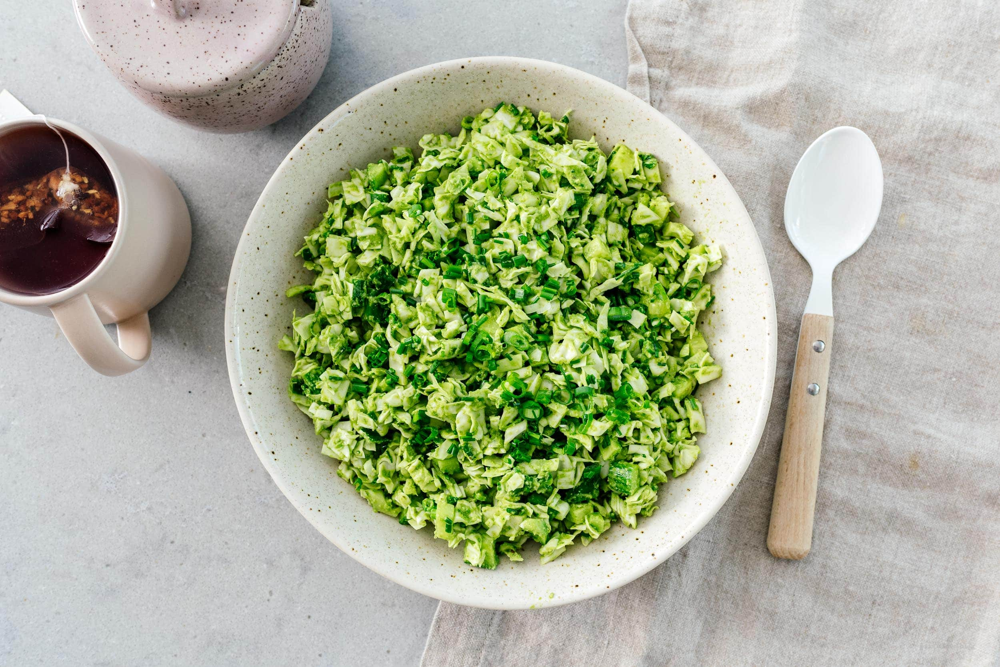

Bunless breakfast
Ingredients
- 2 large eggs
- 2 tbsp water
- 1/2 avocado, lightly mashed
- 1 slice cooked bacon, halved
- shredded cheddar
Recipe
- STEP 1
In a medium nonstick pan, place two mason jar
lids (centers removed). Spray entire pan with
cooking spray and place over medium heat.
Crack eggs into the centers of lids and lightly whisk
with a fork to break up yolk. - STEP 2
Pour water around lids and cover pan.
Cook, letting eggs steam, until whites
are cooked through, about 3 minutes. Remove lid
and top one egg with cheddar. Cook until
cheese is slightly melty, about 1 minute more. - STEP 3
Invert egg bun without cheese onto a plate.
Top with mashed avocado and cooked bacon
. Top with the cheesy egg bun, cheese-side down.

Pot chicken
Ingredients
- 2 tsp. dried parsley
- 1 tsp. dried dill
- 1/2 tsp. paprika
- 1/2 tsp. dried chives
- 1/4 tsp. onion powder
- 4 boneless skinless chicken breasts
- Kosher salt
- Freshly ground black pepper
- 2 tbsp. extra-virgin olive oil
- 1 c. low-sodium chicken broth
Recipe
- In a small bowl, combine spices.
Season chicken with salt and pepper.
Set Instant Pot to Sauté setting and heat oil.
Once hot, add chicken breasts. Sear chicken on both sides
until golden, 3 minutes per side. Transfer to a plate
and sprinkle both sides of chicken with spice mixture. - Turn off Instant Pot and add broth to pot.
Place trivet in pot and arrange chicken on top.
Lock lid and set to Pressure Cook on high for 5 minutes. - Follow manufacturer’s guide for quick release,
making sure to wait until cycle is complete before unlocking
and removing lid. Serve chicken with broth spooned over top.

Green Goddess salad
Ingredients
- juice of 2 lemons
- 1/4 cup olive oil
- 2 tbsp rice vinegar
- 2 cloves garlic
- 1 small shallot
- 1 cup fresh basil
- 1 cup spinach
- 1/3 cup nutritional yeast
- 1/4 cup walnuts
- 1 tsp salt
- 1 small cabbage finely diced
- 3-4 small Persian cucumbers finely diced
- 1 bunch green onions sliced
- 1/4 cup chives finely sliced
Recipe
- Finely dice or chop up all of the
vegetables and toss in a large bowl. - In a blender, add the dressing ingredients,
liquids first: lemon juice, olive oil,
rice vinegar, shallot, basil leaves,
spinach, nutritional yeast, walnuts, and salt.
Blend until smooth. - Add the dressing to the bowl with the diced vegetables
and mix well. Enjoy on its own, on tacos,
as a side with protein, or scooped up with tortilla chips!
